| 日付 | 2013年4月27日（土） - 2013年4月29日（月） | ||||||
|---|---|---|---|---|---|---|---|
| 山域 | 阿武隈周辺 | ||||||
| メンバー | 家族（長女・2歳） | ||||||
| 山行形態 | 子連れ2泊3日ホテル泊 | ||||||
| アクセス | 車 | ||||||
| ルート (Map2) |
|
2日目
昨夜は寝ようと電気を消した途端に子供が泣き出し、なかなか泣き止まなかった。
シングルベッドはさすがに狭かったが、比較的快適なホテルだった。
今朝は6時半に出発。昨日買ったベーグルを食べながら奥久慈男体山を目指す。
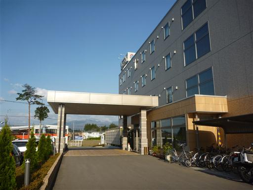
山間部を走っていくと、目の前に一際目立つ岩峰が見えてきた。
一目でそれと分かる奥久慈男体山だ。これほど立派な山だとは思わなかった。
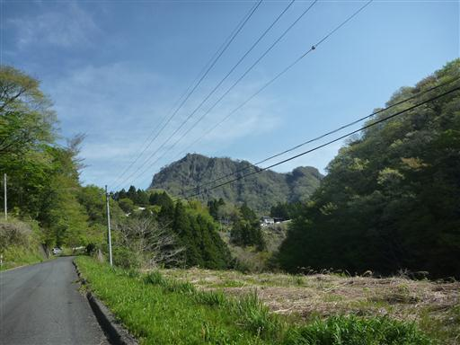
駐車場に車を停める。一台分だけスペースが空いていた。標高190m。
もっと登山口に近いところにも駐車場があったのだが、この時は気が付かなかった。
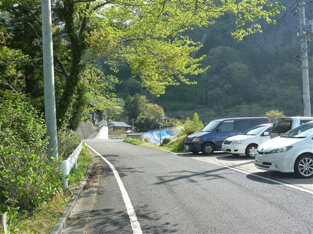
足元は美しい緑色に包まれている。
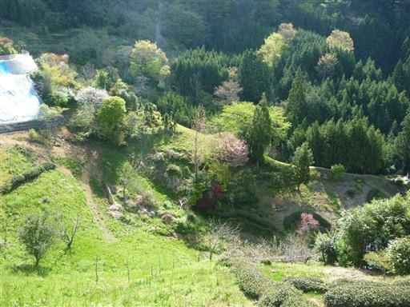
少し歩いて登山口前の駐車場に到着する。
ここの駐車場はもう一杯で路駐している車もある。みな早起きだ。
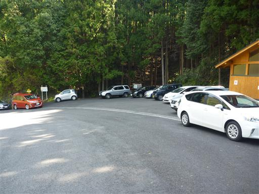
目の前に聳える奥久慈男体山。標高以上に高く見える。
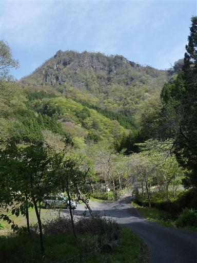
車道から細い道に入っていく。
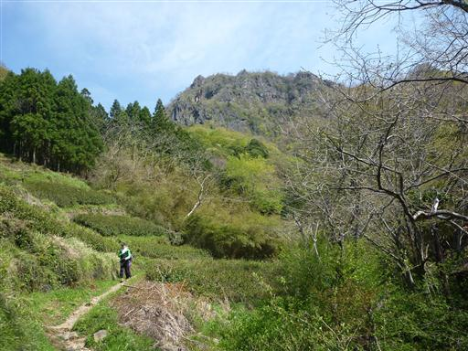
見上げると岩壁がいくつも見える。この辺りの地形は非常に急峻だ。
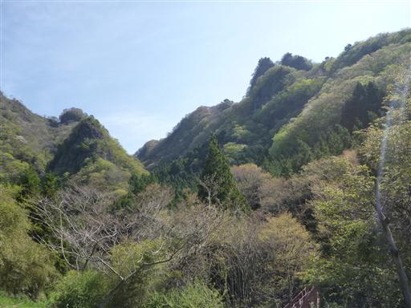
一般コースと健脚コースの分岐点。鎖場があって面白そうな健脚コースを選択する。
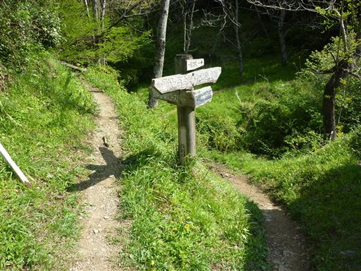
緑のトンネルを抜けていく。
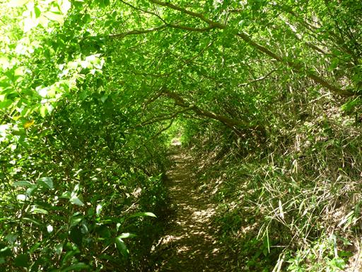
間もなく辺りは植林地帯となる。岩山でも下の方は植林を行っているようだ。
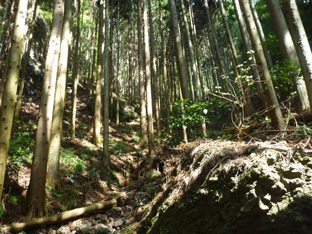
健脚ルートを選ぶ人は少ないと思ったが、案外登山者の姿を見かける。
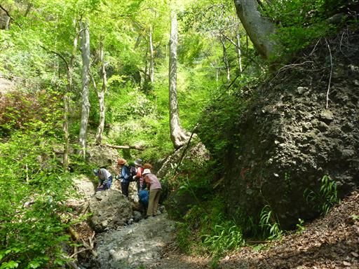
岩場が現れる。鎖を使うまでもない簡単な鎖場だ。
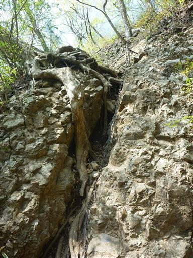
ところどころでツツジが目を楽しませてくれる。
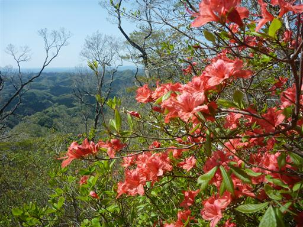
この辺りはちょうど新緑の季節。気温も昨日より暖かく、歩いていて気持ちが良い。
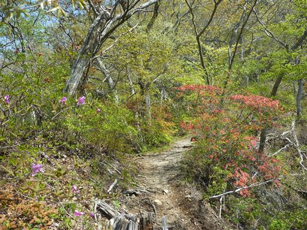
難易度の高い岩場はないが、岩場の数は結構多い。
荷物が重いので慎重に登っていく。
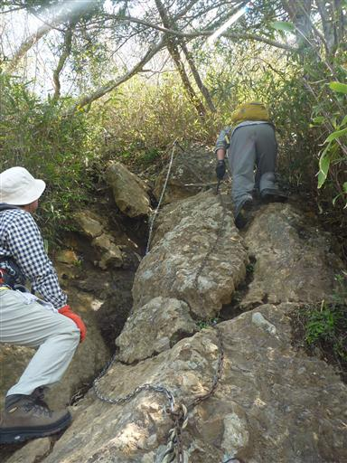
稜線に到着。木が折れて景色を覗ける窓のようになっている。
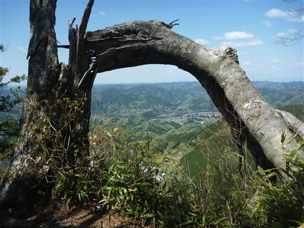
ここには東屋が設けられている。山頂まであとわずかだ。
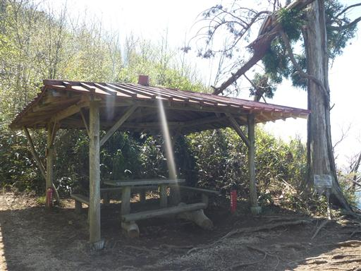
奥久慈男体山の山頂に到着。標高654m。
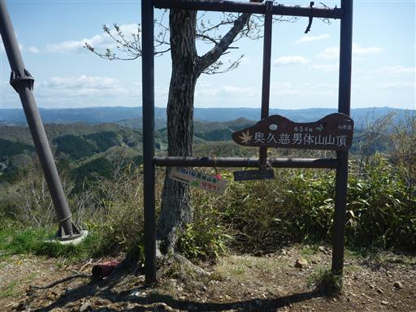
山頂の一角には男体神社の祠が祀られている。
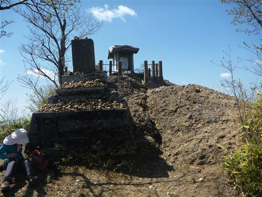
山頂からは素晴らしい展望が広がる。
植林地帯の濃い緑と落葉樹林帯の薄い緑が混ざった特徴のない山々がどこまでも続いている。
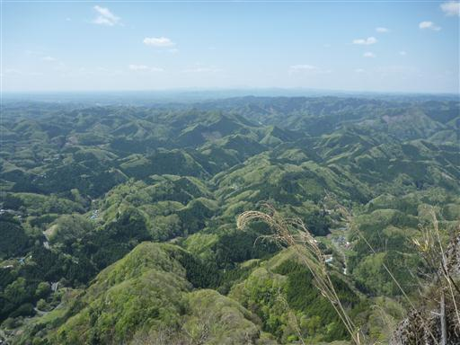
北の方角に見える緩やかな盛り上がりは昨日登った八溝山だ。
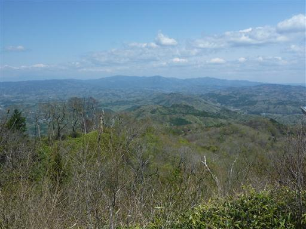
そして足元には遥か下まで崖が切れ落ちている。
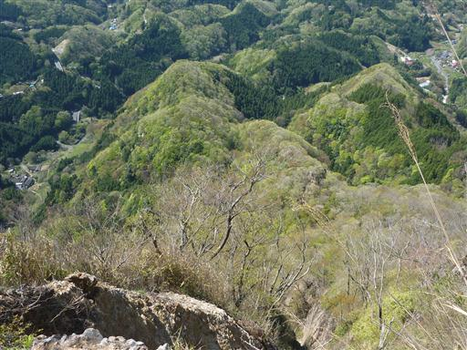
山頂では、年齢、ルート、どこから訪れたか等の
アンケートをとっている人がいた。何の調査だろうか？
風が少々強いので、風の弱いところに腰を下ろして昼食をとることにする。
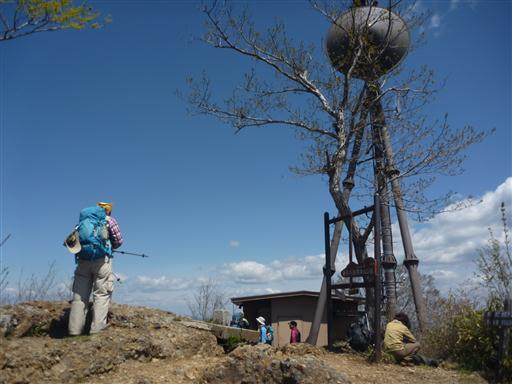
昼食をとったら崖の上に建つ祠に別れを告げて山頂を出発する。
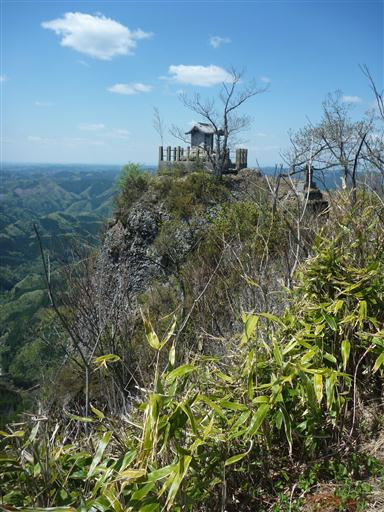
下山道は一般コース。
登りの時の道よりは歩きやすいが、急斜面が多いため子供を歩かせるのは難しそうだ。
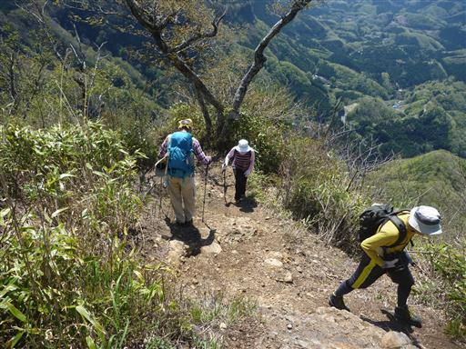
山頂から少し下ったところに東京スカイツリーと同標高地点の看板がある。
タワーの高さ634mと海抜634mでは少々意味合いが異なるような気もするが、
スカイツリーがものすごく高いということはよく分かる。
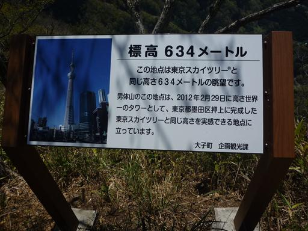
奥久慈男体山から先の稜線も西側は断崖が続いている。
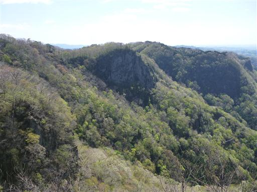
山頂を仰ぎ見る。こちらも見事な岩壁だ。
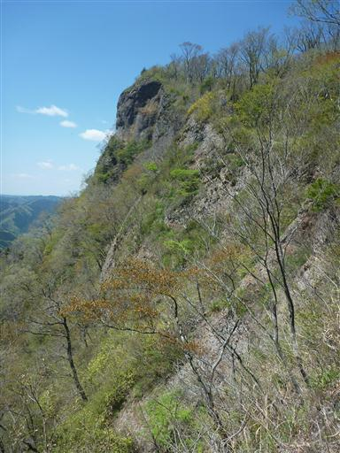
新緑に包まれた登山道を快調に下って行く。
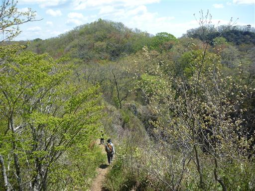
大円地越に到着。東西を結ぶ峠道が乗越しているところだ。
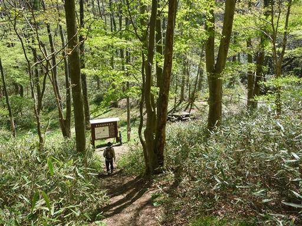
足元にニリンソウの花がちらほら咲いている。
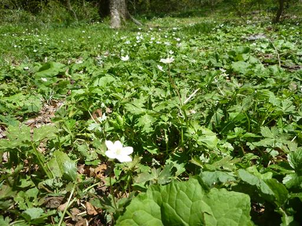
ここから大円地に下山するのが一般コースで、多くの人が利用するルートだ。
今回はここから下山せずに、鷹取岩まで歩く予定だ。
このルートはインターネットで知ったルートで
持っているどのガイドブックにも記載されていなかった。
登山道の整備状況は、はっきりとは分からないが
登山道入口の案内板に記載されていたので問題はないだろう。
見た感じ少々笹薮がうるさそうだが、とりあえず先に進むことにする。
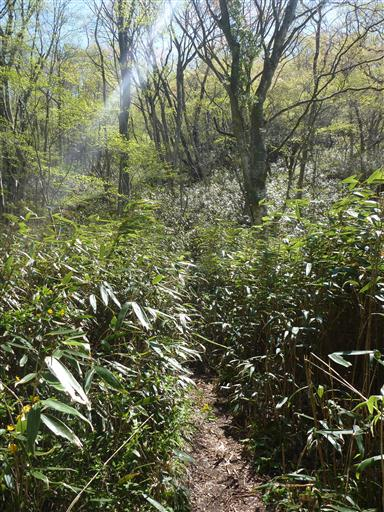
小さな笹薮を超えるとはっきりとした道が現れる。道の整備状況は問題なさそうだ。
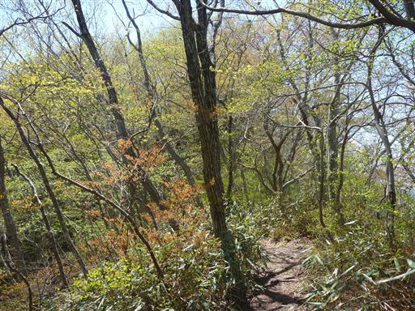
足元にツクバキンモンソウの花が咲いている。
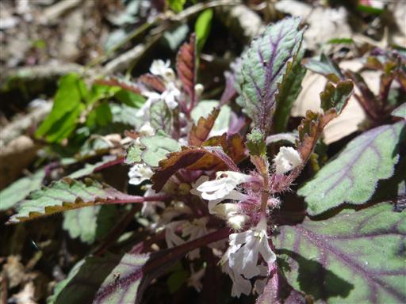
所々樹林が切れて展望が広がる。その一歩先は断崖だ。
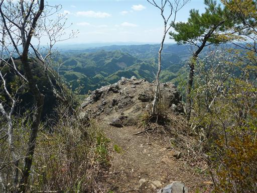
展望ポイントからはこれから辿る稜線が見渡せる。この辺りは地形が複雑だ。
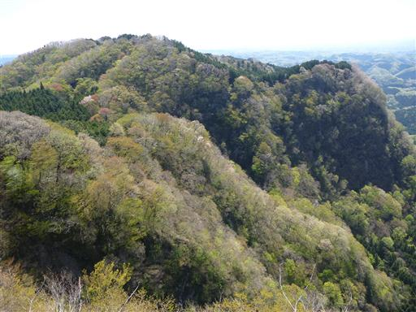
小草越に到着。ここは登山道の十字路で各方向を示した標識が立っている。
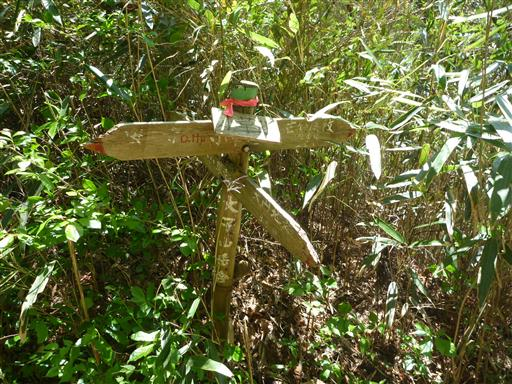
しかし稜線を横切る道はいずれも笹薮が酷い。ここを歩くのは辛そうだ。
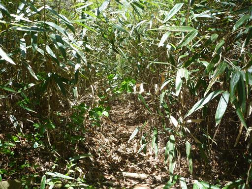
展望が開けたところで右手を見ると奥久慈男体山の見事な岩壁が見渡せる。
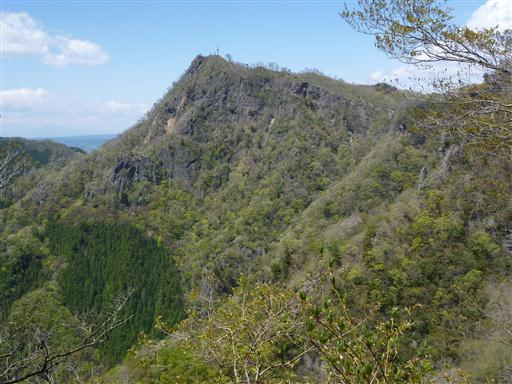
どこまで歩いても足元は切れ落ちた崖が続いている。高度感はかなりのものだ。

入道岩に到着。ここからも絶景が広がる。
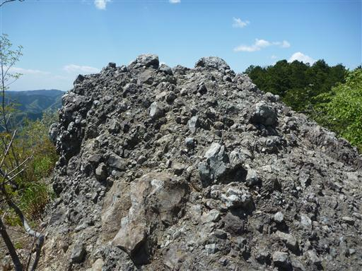
目の前には目指す鷹取岩の絶壁が見えている。
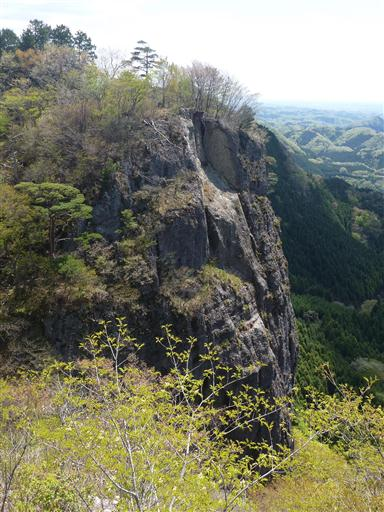
鎖場を通過する。大円地越から鷹取岩の間の唯一の岩場で難易度は低い。
登山道の難易度は奥久慈男体山の健脚コースの方が高いだろう。
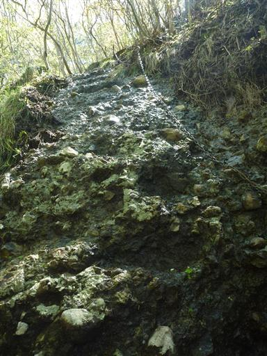
目的地の鷹取岩に到着する。ここからも素晴らしい展望が望める。
奥に見えている山が奥久慈男体山だ。
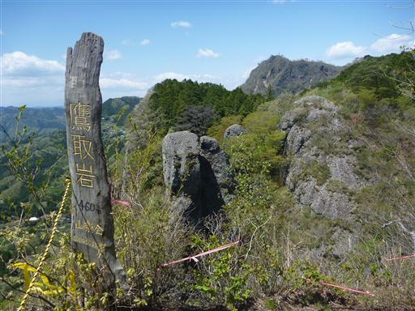
目の前の入道岩は遥か下方まで岩壁が続いている。
先ほど立っていたのは一番右端の岩の上だ。
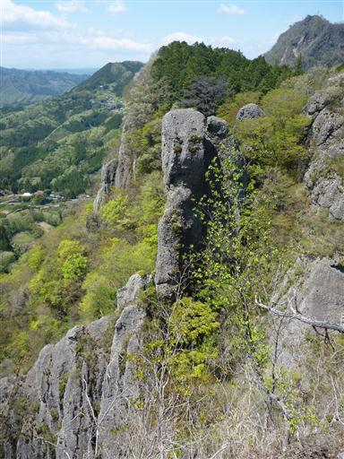
山頂の崖の手前にロープが張られている。
この先に続いていた岩は先の震災で崩落してしまったそうだ。恐ろしや。
山頂は少し風があって子供が嫌がっているため、一通り景色を眺めたら下山を開始する。
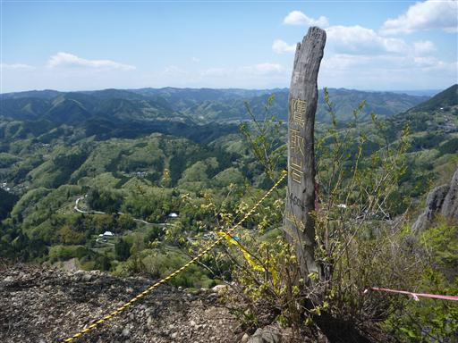
フジの越まで引き返し、ここから下山道に入っていく。
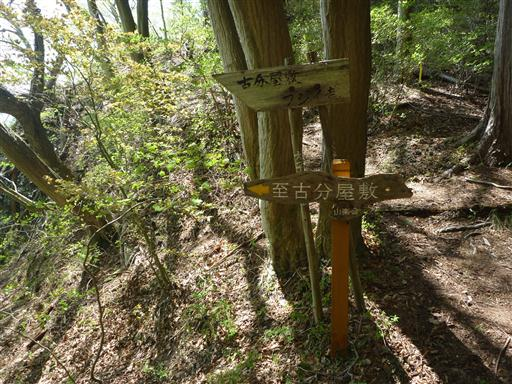
この辺りは岩壁続きなので狭いトラバース道が続く。
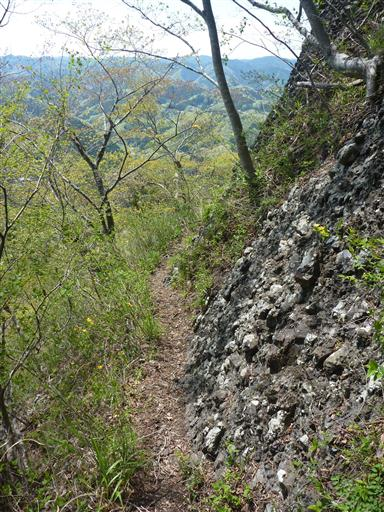
所々でロープが現れる。特にロープをつかむことなく下れる傾斜だ。
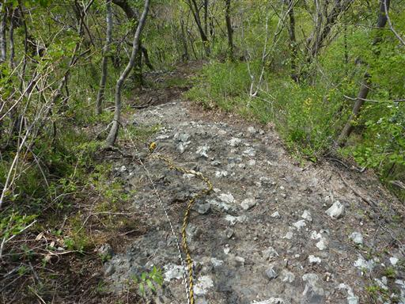
標高を落とすと傾斜は次第に緩やかになり、辺りは植林地帯となる。
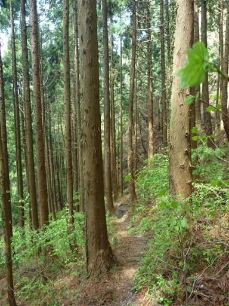
小さな沢に使い物にならなさそうな橋（？）が架かっている。
大円地の集落が見えてくる。本当に美しい山村風景だ。

民家の裏から車道に出てくる。近くにいたおばあちゃんと少々立ち話。
鷹取岩から下って来たのかと聞かれる。登山ルートを把握していることに少しびっくり。さすが地元民だ。
駐車場に戻って、改めて振り返って周りの山々を見渡す。
奥久慈男体山は標高は低いけれど
見事な展望、美しい岩壁、面白い登山道をもつ、素晴らしい山であった。
奥久慈男体山を下山したら、近くにある袋田の滝を目指す。
袋田の滝はこの界隈で最も有名な観光地だ。
なかじまという土産物屋の駐車場に車を停める。
ここはさすがの一大観光地。観光客の数が多い。
駐車場から滝までの500m程の道を、子供と辺りを見渡しながら歩いていく。
袋田の滝キャラクター・たき丸。
料金300円を支払って滝に続くトンネルの中に入っていく。
最初の展望台。滝の音は聞こえるが滝は見えない。
トンネルの中を歩いていくと、だんだんと水の轟音が大きくなっていき、目の前に袋田の滝が現れる。
袋田の滝は何度か写真で見たことがあったが、これほど大きな滝とは思わなかった。
長さ120m、幅73mで規模、美しさを兼ね備えた素晴らしい滝だ。
日本三名瀑の一つに挙げられるだけのことはある。
流れ落ちた水は岩壁に囲まれた沢を下っていく。
トンネルの奥にある神社にお参りをする。
トンネルから望む袋田の滝。展望台は滝のすぐ側に設けられている。
ここからエレベータに乗って高台の新観瀑台を目指す。
2008年にオープンした比較的新しい観瀑台だ。
混雑時は30分以上待つこともあるそうだが、空いていてほとんど待つことなく乗ることができた。
新観瀑台から望む袋田の滝。ここからは袋田の滝の全貌を見ることができる。
上から見てもやっぱり美しい滝だ。
エレベータで再び下に降り、トンネルを途中で抜ける道から帰ることにする。
こちらの道は吊橋を渡って対岸に付けられている。
左にあるのが観瀑台。崖の中、滝の真正面に設けられている。
袋田の滝の下段を横から眺める。これで袋田の滝は見納めだ。
滝の下流は大きな岩がごろごろ転がっている。
細い遊歩道を歩いて駐車場に戻る。
駐車場を借りた土産物屋で刺身こんにゃくを購入する。
こんにゃくは大子町の特産品だ。
袋田の滝を後にして一路、水戸に向かう。
本日の夕食はうどん。たらいうどん椛やを訪れる。
古民家を改造した趣のある佇まいだ。
頼んだのはセットメニューでうどん、天ぷら、豆腐、デザートが付いてくる。
質・量ともに満足できる店だった。
軒先には座布団が敷かれている。混雑時には並ぶこともあるようだ。
満腹になったら本日の宿泊地、スーパーホテル水戸に向かう。
このホテル、到着が遅かったため徒歩5分程度の第2駐車場にまわされて移動が大変であった。
共同浴場は男女交代制で18～21時は女性の時間で使えず、苦労して子供をユニットバスに入れる。
職員の対応は良くビジネスホテルとしては合格点なのだが、ちょっと辛かった。
部屋に入った瞬間、子供は「ママ」と泣き出した。今日も家に帰れないと認識したようだ。
遊んであげると次第に落ち着いていき、今夜は比較的すんなりと寝てくれた。